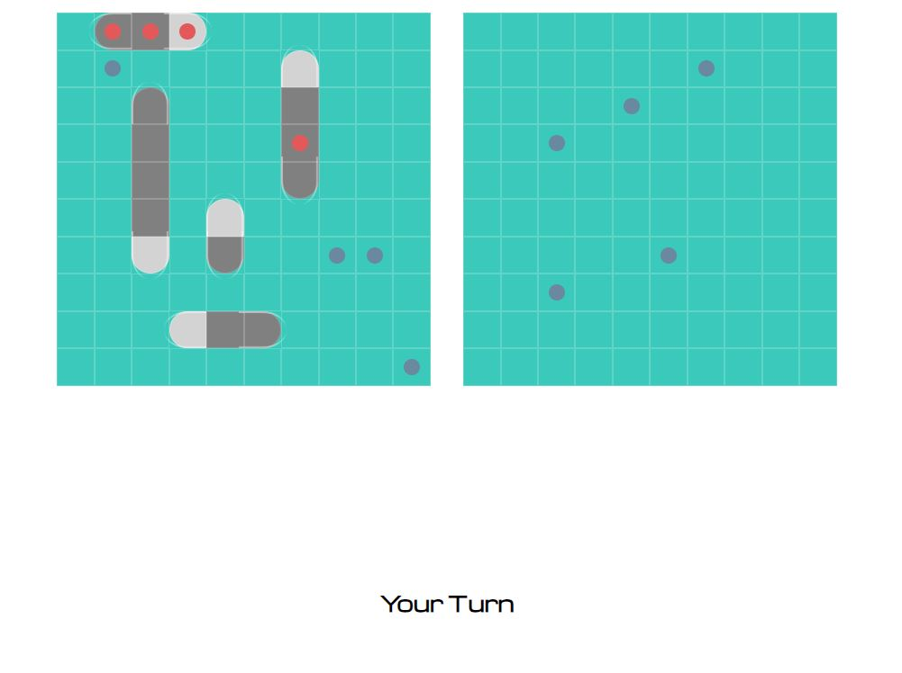
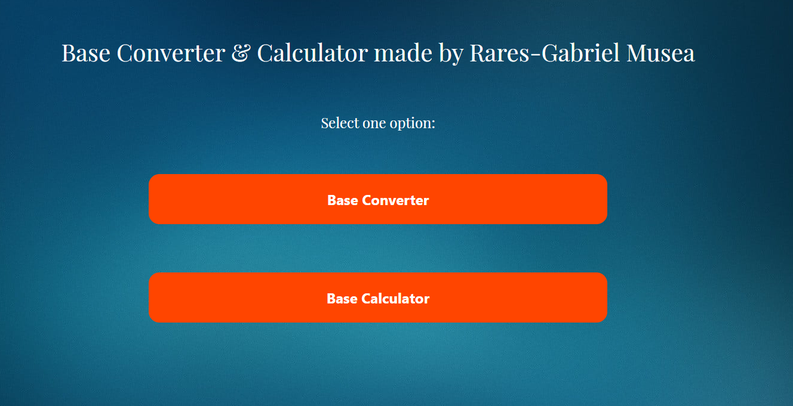
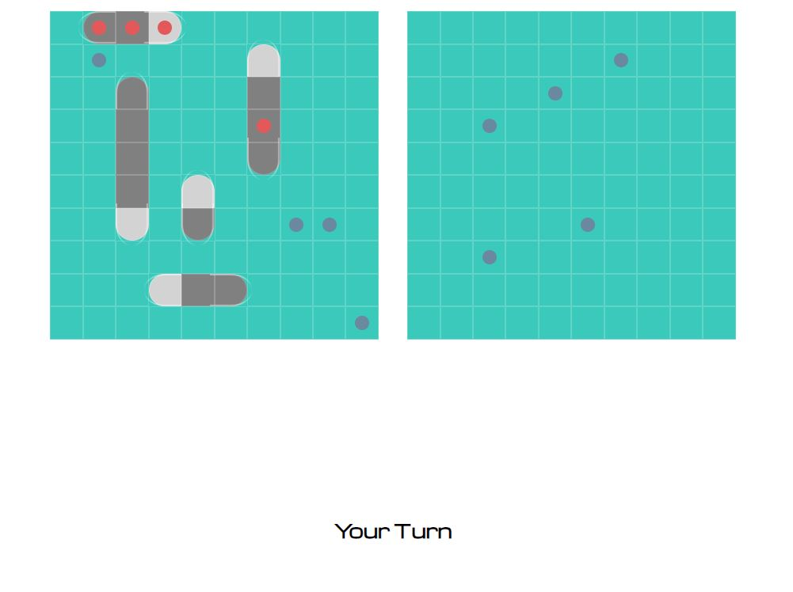
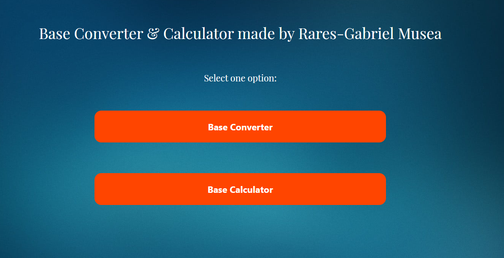

Au trecut peste 7 ani de când am început să învăț programare.
De-a lungul acestor ani, am realizat peste 50 de proiecte
complexe, care m-au ajutat să evoluez și să valorific toate noțiunile studiate.
Portofoliul meu
Această secțiune a paginii este dedicată celor mai reprezentative proiecte, respectiv aplicații la care am
reușit să lucrez sau să contribui în ultima vreme.
Mențiuni:
Proiectele de tip web vor fi semnalate prin intermediul icon-ului
Prin apăsarea butoanelor cu textul
”Apăsați pentru a vedea proiectul”
, un nou tab se va deschide în browser, permițând accesarea și
implicit vizualizarea proiectelor de tip web în browser.
Proiectele de tip consolă sau cele cu interfață grafică, ce nu vor putea fi vizaulizate în
browser vor fi marcate prin intermediul icon-ului
Pentru ultimul tip de proiect menționat, vizualizarea presupune accesarea repository-ului
Github aferent proiectului, cu posibilitatea accesării codului sursă aferent aplicației în
cauză.
Formula 1-Analiza evenimentelor (1950-2020)
Proiectul este o aplicație Web ce urmărește o analiză cât mai clară a datelor referitoare la toate
evenimentele de Formula 1 desfășurate din 1950, până în 2020 inclusiv. S-a folosit
limbajul Python, alături de trei framework-uri specializate pe data analysis (
Pandas, Bokeh, Leaflet ) pentru realizarea
infograficelor, respeciv a graficelor, cât și anumite platforme online gratuite
pentru reprezentarea tabelară sau sub formă de diagrame a unora dintre date. Pentru markup și
funcționalitate, s-au utilizat HTML5, CSS3 și, respectiv
Javascipt, iar pentru layout-ul responsive al paginii, s-a utilizat
Bootstrap.
Jocul Turnurilor din Hanoi
Această aplicație am creat-o în timpul Anului I de facultate, la materia Tehnici de
Programare.Proiectul în sine este o aplicație Desktop, ce poate permite utilizatorului
să joace 2 moduri de joc diferite ale jocului Turnurilor din Hanoi. Pentru implementarea
interfeței grafice, a regulamentului, cât și a alogoritmului specific jocului, am utilizat
limbajul C#, cât și mediul de dezvoltare Microsoft Visual Studio, altături de package-ul
WinForms, care mi-a permis dezvoltarea unei aplicații native Windows. Utilizatorul va putea să
joace atât de unul singur, cât și în doi jucători (local, pe același computer).
Battleships-Joc în browser
Primul meu joc creat vreodată, dar totodată, și dovada clară a faptului că aplicațiile web vor
rămâne mereu cea mai simplă formă de implementare a unei interfețe grafice.
La fel cum noi, românii jucam Avioanele pe foaia de hârtie, în copilărie, la fel și
americanii aveau acest joc simbolic. 5 nave de luptă de dimensiuni diferite sau asemănătoare se
plasează pe un grid de 10x10, urmând ca ulterior fiecare din jucători să ghicească unde se află pe
grid-ul inamic navele adversare. Câștigător este cel care distruge primul toate navele
inamice. 75% din acest proiect a fost codat exclusiv în Javascript, urmând ca restul de 25% să fie
realizate utilizând HTML5 și CSS3.
Formular modern-Programarea în general
Cu toții cunoaștem faptul că elementele HTML au un aspect relativ rudimentar, fără intervenția
utilizatorului în cel puțin o foaie de stil CSS. Cu toate acestea, CSS oferă posibilități
nelimitate în stilizarea modernă a paginilor, grație noilor proprietăți pentru display ( flexbox și
grid display ). Pentru acest proiect, am utilizat flexbox-ul, alături de HTML5 și
CSS3 pentru construirea unui layout relativ modern: un formular despre domeniul care îmi place
cel mai mult, anume IT-ul și programarea.
Convertor baze de numerație
Am construit această aplicație pentru a putea aplica mai ușor cunoștințele acumulate în anul I de
facultate, la Arhitectura Sistemelor de Calcul. Proiectul în cazuă este o aplicație
web, construită în HTML5, CSS3 și Javascript, ce permite conversia unui număr
dintr-o bază de numerație cuprinsă între 2 și 16 într-o alta, încadrată în același interval, cât
și operații aritmetice de bază ( adunări, scăderi, înmulțiri și împărțiri întregi
), într-o bază de numerație specificată.
Website-Edward John Smith
Pe lângă informatică, o altă pasiune de a mea este legată și de istoria vasului RMS Titanic.
Mai mult decât povestea tragică a pachebotului, care s-a scufundat în 1912, am manifestat
și o foarte mare curiozitate pentru omul din spatele cârmei, cel care a murit în apele înghețate ale
Atlanticului de Nord în încercarea de a salva viețile celor 2200 de pasageri aflați la bordrul vasului.
Această pagină i-am dedicat-o numai lui. Webiste-ul a fost creat utilizând exclusiv HTML5 și CSS3.
.svg) 




.jpg)
.png)
.jpg)
.jpg)
.jpg)
.jpg)